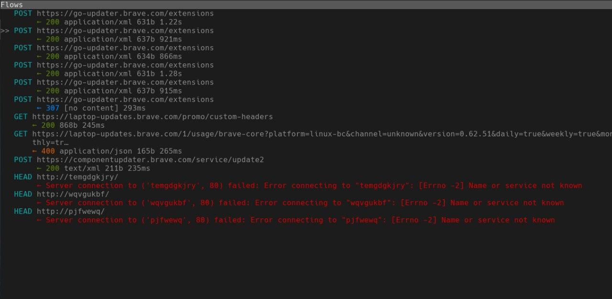

There is a a lot of misinformation being spread about Brave. Many people
claim that it is spyware or harmful to your privacy. This is not true and I will debunk every claim I have found.
DISCLAIMER: I am not affiliated with Brave in any way. I rarely even use it.
An ad company that has worked hard to provide services that do not harm your privacy and they clearly state in their privacy policy that their ads do not track you.
This is only partly true. Brave whitelists some Facebook and Twitter trackers because blocking them outright would
break buttons on some websites (e.g. the Facebook like buttons). Brave is meant to be easy to use, breaking a lot of
websites is not easy to use. Brave was never meant to be a max privacy solution.
The whitelist is now optional and can easily be disabled in the settings.
No it doesn't. This is a misconception from people who have read BAT's home page. The home page says that the user's activites are monitored
to award websites with a certain amount of BAT accordingly. Many people think this means Brave is tracking them but
it does not. Anyone who has used BAT would know that the browser tracks the amount of time spent on each website
locally so it can award websites with the right amount of BAT. The Brave devs do not get any information from
this as it is done entirely locally. BTW, "BAT" is a freely convertible cryptocurrency, exchanges can be found here.
Even if you still dislike BAT, you can disable it. It's actually disabled by default. BAT is not the same as the
Brave Browser.
And X website is most likely full of misinformation. A common website I see posted around is https://spyware.neocities.org/articles/brave.html.
Some of this website's articles are good but a lot of them are just wrong. The website claims that Brave is spyware.
It says this because they whitelist some trackers (see above), they have auto-updates that cannot be disabled, they
use Google by default, their home page contains analytics, they have crash reports and make some other requests.
Auto-updates are not directly anti-privacy. There is no proof that the Brave team are using this to track you. It
cannot be disabled because they are important for security.
Brave uses Google by default because it is meant to be easy to use. Using search engines others may not be familiar
with or ones that give worse results will not be easy to use. Again, Brave is not meant to be a maximum privacy
solution.
Their home page (their website, not the browser's home page) contains analytics because they want to see what type
of users are using their service, how many etc. Analytics are used virtually everywhere and are a nice way to gain
information about how much traffic your website is recieving. Additionally, Brave's tracker blocker blocks this
tracker anyway.
Crash reports are also not anti-privacy. They are commonly used to help diagnose errors and fix them. They can
easily be disabled if needed.
The other requests part is complete nonsense. I have monitored the requests Brave makes and they are very little
(only auto-updates). The other requests they mentioned have never appeared. See the photo below for what requests
actually happen.

Chromium is open source and all Google tracking can easily be disabled. Brave strips out all of this by default. Remember that Chromium is not the same as Chrome.
JavaScript is used for many purposes and was not created solely to track you. Brendan Eich did not create it for it to be used as a potential tracking tool.
No it doesn't. Brave is open source and there has been no backdoor ever found. Many people claim that Brave being able to use custom HTTP headers are a backdoor but this isn't true. HTTP headers are allowed as per RFC 7231. See Brendan Eich's response to this.